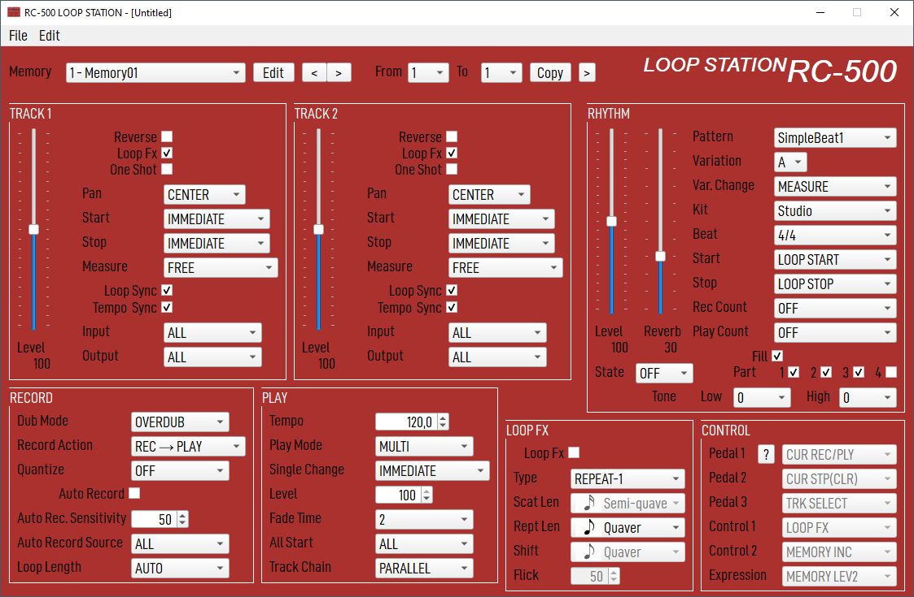

Boss RC-500 Editor

This tool allows creating, updating and saving a configuration file for the Boss RC-500 looper.
WARNING: This is an alpha-stage tool, under development, and with probably a lot of issues. So, before
using it on your configuration files, make a backup.
Source code
Here : https://github.com/dfleury2/boss-rc500-editor
Download
At this time I only provide a Windows10 version here : BossRc500.zip
I am currently using this tool under Linux Debian (bullseye).
Basic usage
When the tool starts, it loads a default configuration file, MEMORY_DEFAULT.RC0, in the resource directory.
So you can start creating a configuration file without your RC-500 connected to your PC.
If your looper is connected, you can directly open the MEMORY1.RC0 file from the connected disk, in ROLAND/DATA
directory.
The window title will show you the filename you are currently editing.
Menu
New
Create a new database by reading the default one provided (in resources/templates/MEMORY_DEFAULT.RC0).
A new database has no name, you will need to provide one when you will save it to disk.
Open...
Open an existing memory file.
Save
Save the current database into a file.
For a new database, you will be prompted for a filename on your disk (or directly in your looper).
If the name of the filename is "MEMORY1.RC0", the tool will automatically create a "MEMORY2.RC0" in
the same directory. It allows the looper to ake in account the new files else it tries to load one that
contains the checksum (no computed by the tool)
Memory
This list allows to change the current memory you are working on.
The list displays an extended version of the memory name. By default only the first 12 chars are displayed
on the looper screen. Here, you can write a longer description, only the first 12 will be seen on the looper screen,
but you can still see the longer form here.
Edit allows to change the current memory name.
Copy
This option allow you to copy the current memory slot to range of memory slots.
So you can easily duplicate your setting from a slot to some other quickly.
Assigns
This window allows you to edit the ASSIGN part of the looper.
Cancel
Cancel will revert any changes you have made.
Apply
Appy will apply the changes to the current memory selected in the main window.